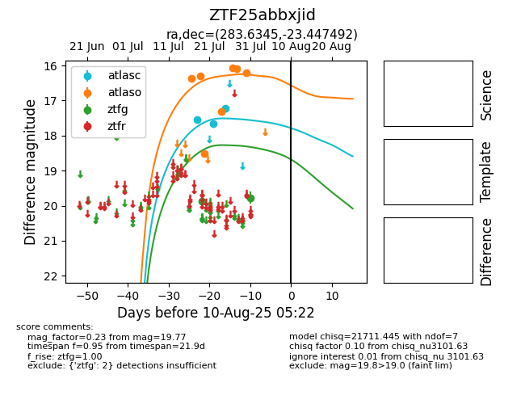

Target ZTF25abbxjid at 2025-08-10 05:22, see:
FINK: fink-portal.org/ZTF25abbxjid
Lasair: lasair-ztf.lsst.ac.uk/objects/ZTF25abbxjid
ALeRCE: alerce.online/object/ZTF25abbxjid
alt names
ZTF25abbxjid (ztf,fink)
coordinates:
equatorial (ra, dec) = (283.6345,-23.44749)
galactic (l, b) = (12.1314,-11.09780)
photometry
last atlasc=17.22, atlaso=16.21, ztfg=19.77
3 atlasc, 7 atlaso, 2 ztfg detections
